Secondary follow-through that survives frame drops: closed-form analytical spring damper vs explicit Euler integration FAQ
Understand in 3 minutes why browser frame drops make spring animations overshoot or explode, and reproduce a zero-drift closed-form matrix-exponential damper rig in 10 minutes.
中文 · Interactive Demo · Measured 7-Card Report
① 📌 Executive Summary
- Explicit forward Euler integration violates stability bounds and overshoots wildly during browser frame drops. For a critically damped spring with natural frequency $\omega_0 = 18\text{ rad/s}$, an
80 msframe spike (12.5 FPS) yields dimensionless step $\omega_0 \Delta t = 1.44 > 1$; after just two steps (t = 0.16 s), explicit Euler shoots tox = +6.2944, overshooting targetx* = 2.0by4.2944scene units and diverging from the true trajectory by5.1656scene units. - Closed-form matrix-exponential updates are unconditionally stable and timestep-invariant. By the semigroup identity $\exp(\mathbf{A}\Delta t_1)\exp(\mathbf{A}\Delta t_2) = \exp(\mathbf{A}(\Delta t_1 + \Delta t_2))$, stepping across
80 msframe spikes or jumping directly to timestamp $t$ yields0overshoot across all 101 sampled frames and a maximum step-partition drift of4.44e-16scene units (floating-point rounding). - Closed-form exponential evaluation is
18.85×faster than 96-substep RK4 while agreeing within1.90e-8scene units. Across 8192 spring evaluations on Node CPU, the single-step closed-form exponential takes1.18 msmedian versus22.28 msfor 96-substep 4th-order Runge-Kutta integration. - 65-solid twin-track spring sled rig, 13 local acceptance checks. Scene geometry is
synthetic; closed-form ODE conformance and Node CPU timings aremeasured;Spring-Gauselastic 3D Gaussian reconstruction and nonlinear continuum FEM arenot_measured.

Daily capability direction check: A novel efficient structure-preserving exponential integrator for Hamiltonian systems (arXiv:2506.07072, v2 updated 2026-03-02) and ECCV 2024 paper Reconstruction and Simulation of Elastic Objects with Spring-Mass 3D Gaussians (Spring-Gaus) (arXiv:2403.09434) highlight why integrating stiff linear spring dynamics analytically via matrix exponentials is essential for large-timestep stability. Verified 2026-11-10; this demo implements deterministic closed-form critically damped spring integration and RK4/Euler comparison without running neural 3DGS optimization.
② 🎯 Architect & Client Q&A
Q1 When should we choose elastic 3DGS / neural physics models vs a closed-form analytical spring damper?
Evaluate physics-integrated 3D Gaussian models (Spring-Gaus, PhysGaussian) when reconstructing unknown elastic material parameters and volumetric deformations from multi-view video captures.
Use a closed-form analytical second-order spring damper whenever building interactive camera smoothing, UI spring transitions, or secondary attachment follow-through (antennas, cranes, badges) that must run identically at 15 FPS, 60 FPS, and 144 FPS without sub-stepping overhead.
Q2 Under what constraints is closed-form matrix-exponential integration strictly superior?
In browser requestAnimationFrame loops, tab switches, garbage collection pauses, or heavy DOM layouts regularly cause 50–120 ms frame-time spikes.
Explicit Euler (pos += dt * vel; vel += dt * acc) overshoots whenever $\omega_0 \Delta t > 1$ and diverges to infinity whenever $\omega_0 \Delta t > 2$. Fixed-substep RK4 avoids blowing up only by running more substeps during long frame stalls, worsening main-thread hitching. The closed-form matrix exponential executes in constant $O(1)$ time for any $\Delta t > 0$ with zero overshoot and zero timestep drift.
Q3 How does the closed-form matrix exponential guarantee zero frame-drop drift from first principles?
Let $e(t) = x(t) - x^$ be the displacement error from target $x^$ for a critically damped spring with natural frequency $\omega_0$:
$$\ddot{e} + 2\omega_0 \dot{e} + \omega_0^2 e = 0$$
Because the characteristic polynomial $(\lambda + \omega_0)^2 = 0$ has a repeated root $\lambda = -\omega_0$, the exact matrix-exponential transition from state $(e_0, v_0)$ over any time step $\Delta t$ is:
$$e(\Delta t) = \left(e_0 + (v_0 + \omega_0 e_0)\Delta t\right) e^{-\omega_0 \Delta t}$$
$$v(\Delta t) = \left(v_0 - \omega_0 (v_0 + \omega_0 e_0)\Delta t\right) e^{-\omega_0 \Delta t}$$
Because this is the exact analytical solution of the linear autonomous ODE, advancing by $\Delta t_1 = 80\text{ ms}$ and then $\Delta t_2 = 80\text{ ms}$ is algebraically identical to advancing by $\Delta t = 160\text{ ms}$ in one step.
By contrast, starting at $x_0 = -2, v_0 = 0$ toward $x^* = +2$ with $\omega_0 = 18\text{ rad/s}$ and $\Delta t = 0.08\text{ s}$: explicit Euler computes initial acceleration $a_0 = -18^2(-4) = +1296$, steps to $x_1 = -2, v_1 = 103.68$ at $0.08\text{ s}$, and then leaps to $x_2 = -2 + 0.08 \times 103.68 = +6.2944$ at $0.16\text{ s}$—overshooting $x^* = 2.0$ by 4.2944 scene units!
Q4 How can I reproduce this in 10 minutes?
- Run
npm run devand open/demos/analytical-spring-rig/, initialized att = 0.16 s,ω₀ = 18 rad/s, andΔt = 80 ms. - In
analytical-expmode, compare the upper active sled (orange) against the lower exact reference sled (gray): both align atx = 1.1288withovershoot = 0.0000 uanddrift = 0.000000 u. - Switch to
explicit-eulermode att = 0.16 s: the upper sled shoots past the orange target pillar (x* = 2.0) to+6.2944, reportingovershoot = 4.2944 uanddrift = 5.1656 u. - Adjust Stiffness (
6–32 rad/s), Frame step (10–120 ms), and Target X (0.5–2.6); enter an invalid step size such as250 msto verify atomic rejection and state preservation. - Click
Export traceto downloadANALYTICAL_SPRING_TRACE.jsonwith carriage matrices and drift telemetry. - Run
npx vitest run tests/analytical-spring.test.ts, then build and runnode scripts/benchmark-analytical-spring.mjsagainst a port 4335 preview server.
③ 🧭 Visual Diagrams
④ 📊 Architect Decision Matrix
| Criterion | Explicit Forward Euler (explicit-euler) |
Semi-Implicit / Symplectic Euler | Multi-Substep Numerical (96-substep RK4) |
Closed-Form Matrix Exponential (analytical-exp) |
|---|---|---|---|---|
Overshoot under 80 ms frame drop ($\omega_0=18$) |
Overshoots target by 4.2944 u at 0.16s |
Wider stability, still diverges when $\omega_0\Delta t > 2$ | 0 overshoot (truncation error 1.90e-8 u) |
Measured 0 overshoot (exact analytical solution) |
| Trajectory drift across frame rates (12.5Hz vs 120Hz) | Diverges by 5.1656 u at 0.16s |
Damping ratio and phase shift with $\Delta t$ | Requires many substeps to suppress drift | Measured 4.44e-16 u (strictly timestep-invariant) |
| 8192-evaluation Node CPU solve median | Fast arithmetic (with severe error) | Fast arithmetic (with step-dependent damping) | 22.28 ms (96-substep loop overhead) |
1.18 ms (18.85× faster than 96-substep RK4) |
| Arbitrary timeline seeking / reversal | Requires stepping from $t=0$ | Requires stepping from $t=0$ | Requires stepping substeps | Direct $O(1)$ evaluation at any $t$; exact reversal |
| Best architectural role | Never use for variable-dt springs | Fixed-timestep particle loops | Offline verification of nonlinear ODEs | Camera follow-through, UI springs, secondary attachments |
Quantitative example: Starting from $x_0 = -2.0, v_0 = 0$ toward $x^* = +2.0$ ($e_0 = -4.0, \omega_0 = 18\text{ rad/s}$), at $t = 0.16\text{ s}$ ($\omega_0 t = 2.88$), the exact critically damped position is $2.0 - 4.0(1 + 2.88)e^{-2.88} = 1.1288$ scene units (0 overshoot). Stepping explicit Euler at $\Delta t = 0.08\text{ s}$ yields $x(0.16) = +6.2944$, overshooting the target by 4.2944 units and drifting 5.1656 units from the exact trajectory.
⑤ 🧪 New Capability Demo & Benchmark Findings (with 7-Card)
Sealed data records 65 3D solids, 101 sampled timestamps audited for overshoot and frame-drop drift, and solver equivalence between the single-step closed-form matrix exponential and 96-substep 4th-order Runge-Kutta (RK4) integration (maximum_solver_error = 1.90e-8 scene units, threshold < 1e-5).
| Node CPU Spring State Queries | Closed-Form Exponential Median | 96-Substep RK4 Solver Median |
|---|---|---|
| 128 | 0.03 ms | 0.29 ms |
| 1024 | 0.20 ms | 2.79 ms |
| 8192 | 1.18 ms | 22.28 ms |
Each load tier runs 7 alternating repetitions after warmup on Node CPU (excluding WebGL rendering). At 8192 evaluations, the closed-form matrix exponential is 18.85× faster than 96-substep RK4 while guaranteeing zero overshoot and zero frame-drop drift.
Measured 7-Card Report (EN) · 中文七卡. Scene geometry is synthetic, ODE conformance and CPU timings are measured, and Spring-Gaus neural 3DGS reconstruction and nonlinear continuum FEM are not_measured.
⑥ 🛠️ Architect Checklist
- Never integrate stiff camera or UI springs with explicit forward Euler under variable
requestAnimationFramedeltas. - Use the closed-form matrix-exponential update for linear second-order critically damped follow-through.
- Verify semigroup timestep invariance (
2 × 80msvs1 × 160msposition difference< 1e-12). - Verify that critically damped configurations maintain
0target overshoot across the entire timeline. - Inject
80–120 msframe-drop spikes in automated tests to confirm smooth monotonic convergence. - Cross-check closed-form exponential implementations against high-substep RK4 (
< 1e-5agreement). - Validate stiffness $\omega_0$, step size, and target bounds and reject invalid inputs (
stepMs = 250) atomically. - Verify that forward and reverse timestamp scrubbing produce identical sled carriage world matrices.
- Separate linear secondary follow-through springs from nonlinear collision/fracture continuum solvers.
- Label unexecuted
Spring-Gaus3D Gaussian optimization and hardware servo control loops explicitly asnot_measured.
Primary sources: Structure-Preserving Exponential Integrator (arXiv:2506.07072) (v2 updated 2026-03-02) integrates stiff linear components via matrix exponentials for long-term stability; Spring-Gaus (arXiv:2403.09434) (ECCV 2024) embeds a 3D spring-mass model into 3D Gaussian kernels for elastic object simulation. Verified 2026-11-10; this demo is an original deterministic closed-form spring damper benchmark and does not run neural 3DGS training.